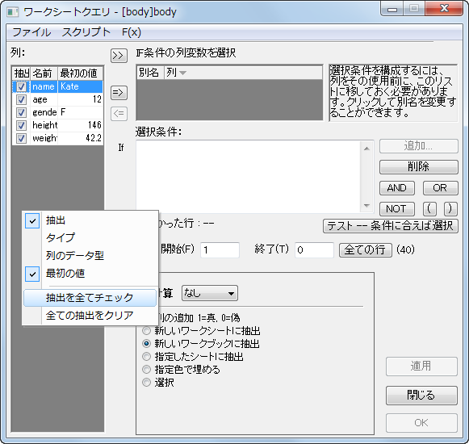
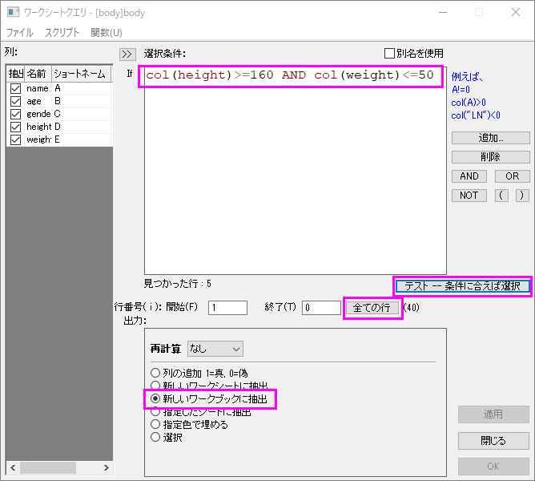
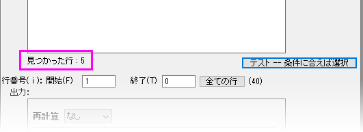

ワークシートクエリ
Extract-Wks-Data
概要
このチュートリアルでは、ワークシートクエリダイアログの使用方法について説明しています。
必要なOriginのバージョン:Origin 2019b
学習する項目
このチュートリアルでは、以下の項目について解説します。
- 数値および時間データを抽出する
- 抽出条件で別名を使う
- 抽出条件でLabTalk関数を使う
ダイアログの概要
 | (A) アクティブなワークブックのスプレッドシートセル表記 (SCN)がOFFの時(ワークブックの左上にこのアイコンが表示されます。)または、(b) SCNがONになっていても、ワークシートクエリの右上でUse Aliasボックスがチェックされているとき、ワークシートクエリダイアグラムボックスは次の画像の状態とは若干異なるものとなります。ワークシートクエリダイアログボックスはバージョン2019bで列の命名を柔軟に行うため修正されました。このチュートリアルでは、列エイリアスの定義を紹介します。If条件の列変数を選択もご参照ください。
|
- 
ワークシートクエリダイアグラムには主要なパネルが2つあります。
- 左のパネルはアクティブなワークシートにある列を一覧します。左のパネルを右クリックして、どの列のプロパティを表示するかを選びます。(例 フォーマット、最初の値など)抽出列がチェックされている列のみが、ダイアログボックスOKをクリックしたときに出力されます。
- 右側のパネルでは、抽出条件を設定したり、テストすることができます。SCNがオフになっている、またはUse Aliasボックスにチェックを入れている場合、パネルに条件を抽出したい列を選択し、ボタンをクリックしてIF条件の列変数を選択ボックスに移動させます。移動できましたら、条件を定義します。エイリアスではなく、列の名前やインデックスを使用する場合は、条件を直接定義します。
条件を定義する
数値データの抽出
- 新しいワークブックを開き、\Samples\Statistics\automobile.dat ファイルを開きます。
- ワークシート: ワークシートクエリを選択して、ワークシートクエリダイアログボックスを開きます。
有効なシンタックスがわかれば、直接条件ボックスに入力します。条件ボックス右側のボタンが、条件を入力する補助のために用意されています。さらに、関数メニューから関数と変数を挿入できます。
- 身長が160cm以上の個人を取り出すには、条件ボックスに次のように入力します。
col(height)>=160
- 複数の条件がある場合、論理演算子、AND, OR, NOTボタンを使って、これらの条件を組み合わせることができます。体重が50kgより小さいという条件を追加しましょう。ANDボタンをクリックして、ANDの後に次を入力します。
col(weight)<=50
クエリは次のようになります。
- 
- クエリを確認するには、すべての行ボタンをクリックして全ての行を選択し(開始が1 終了が0はシートの最後の行を示しています。)、テスト -- 条件に合えば選択をクリックしてクエリを確認します。クエリを確認すると、Originは5つのレコードを返します。
- 
- 他の設定はデフォルトのままにして、OK ボタンをクリックします。5つのレコードの入ったワークブックが新しく作成されます。
文字列の抽出
文字列を抽出する場合、文字列をダブルクォーテーションマーク "で囲む必要があります(例"California」)。
- 女性(F)だけを抽出するには、条件ボックスに次のように入力します。
col(gender) == "F"
- 全ての行ボタンをクリックして、テスト -- 条件に合えば選択をクリックします。18レコードが見つかったとメッセージが表示されます。
- 他の設定をデフォルトのままOKボタンをクリックしてダイアログを閉じ、新しいワークブックに女性のデータを抽出します。
時間データの抽出
日付と時刻のデータは、Originの内部では数値で保存されています。日付は数値の整数部分で、時刻は小数部分です。Originでは、int()およびfrac()関数を使って、数値の整数部と小数部を返すことができます。そして、 Date(MM/DD/YY)とTime(HH:mm:ss)関数を使って、時刻データをユリウス通日に変換することができます。
- 新規ワークブックを開きます。ヘルプ: フォルダを開く: サンプルフォルダを選択して、サンプルフォルダを開きます。このフォルダ内のImport and ExportサブフォルダにあるCustom Date and Time.datを探します。空のワークシートにファイルをドラッグアンドドロップしてインポートします。A列の日付-時間データは正しい日付-時間データ(数値データ)ではなく、文字列データとして扱われているため、左揃えで表示されています。
- A列を選択し、右クリックしプロパティを選びます。フォーマット = 日付、表示 = カスタム表示、カスタム表示に次のように入力します。
dd'.'MM'.'yyyy HH':'mm':'ss'.'##
これで、A列の日付-時間文字列を数値データにフォーマットします。
- 次に、10:00:00から11:00:00までの間のデータをワークシートから抽出します。ワークシート: ワークシートクエリ をクリックして、条件ボックスに次のように入力します。
frac(A) > Time(10:00:00) AND frac(A) < Time(11:00:00)
- 全ての行ボタンをクリックして、テスト -- 条件に合えば選択をクリックします。 120レコードが見つかったとメッセージが表示されます。
- 他の設定をデフォルトのままOKボタンをクリックしてダイアログを閉じ、新しいワークブックに10:00:00から11:00:00までの間のデータを抽出します。
| データコネクタを使用して、ステップ1でデータをインポートすることもできます。データファイルCustom Date and Time.datをドラッグアンドドロップするだけで、日付と時間のデータが2つの列に分割され、それぞれが日付と時間として適切にフォーマットされます。これにより、ステップ2で文字列を使用してデータを手動でフォーマットする手間が省けます。
|